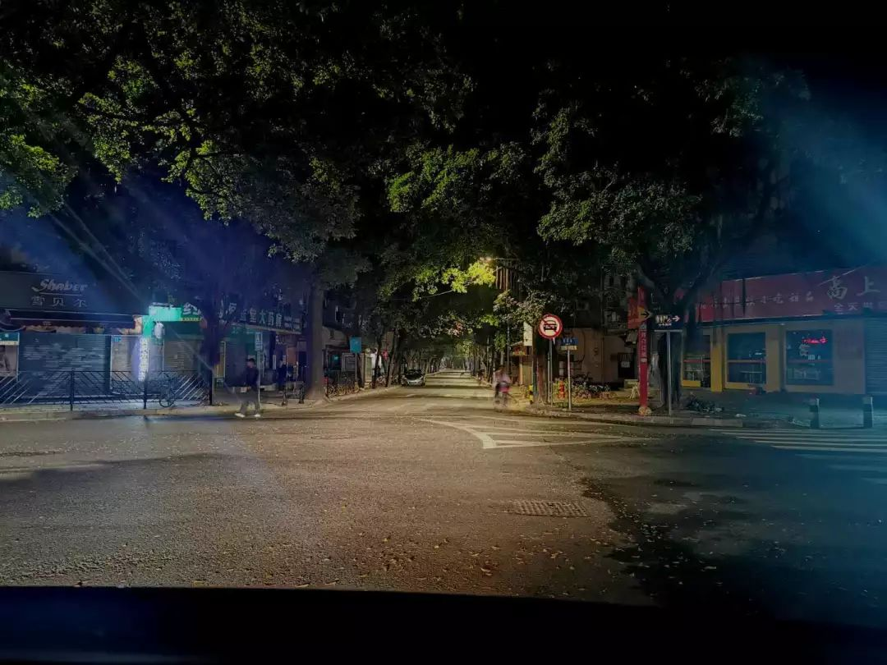
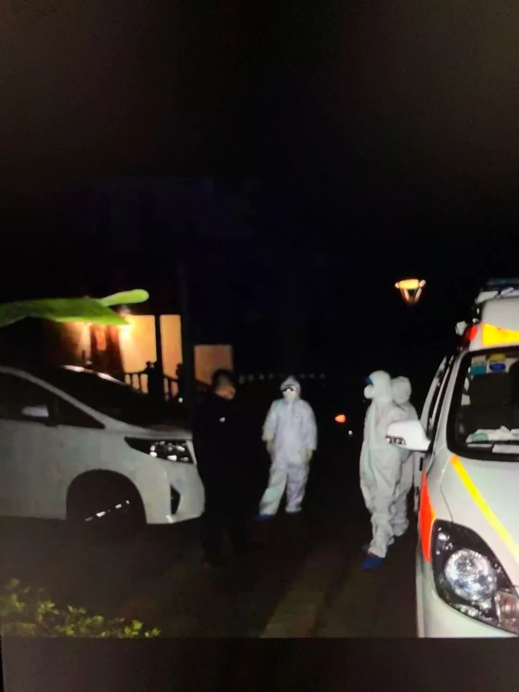

新增病例严重超速，“堰塞湖即将泄洪”，武汉疫情正面临这三大挑战
原文链接 备份链接 06.02.2020本文字数：4302，阅读时长大约7.5分钟 导读：一周时间，武汉新增病例5.5倍增长，累计病例增长3.69倍。 作者 | 第一财经 马晓华 胥会云 武汉封城之后，湖北以外的各省份对新型肺炎展开了“ …


文｜备备
最近，多起因病患隐瞒自身病情或接触史导致大规模感染的新闻让人们对出门和返工多了几分担忧。医院之外，还有更多从事着不同职业的人正在各自的岗位上维持着乡村和城市的疫情防控。大军是一位90后刑警，进入警队近四年，这是他第一次在执行任务时穿上医用防护服，追捕的对象不是犯罪嫌疑人，而是逃跑的疑似病例。以下是他的口述：
时间是六点半左右，正吃着年夜饭，我接到队长打来的电话：“年夜饭吃得怎样？快点吃，一个病例跑掉了，来一趟吧。”
电话里，队长说的是“病例”，我没来得及问是确诊的病患，还是疑似病例。这是我婚后的第二个春节，我和妻子以及两家的父母在一起吃团年饭，不想让他们担心，我只说单位临时有事要回去，再说上两句吉利话，就匆忙出门。

没来得及吃完的年夜饭
到大队后，办公室里只有队长一个人在值班，他指了指办公室门口的一个纸箱，说：“把它们带上吧。” 纸箱里是医用防护服，从警三年多，我还是第一次穿上医用防护服。队长简要说明了情况：逃跑的是一位湖北籍女性，和家人一起到本市旅游，曾途经武汉。今天下午在家人和一位朋友的陪同下到本市医院就医，拍出来的CT显示肺部有感染，被判断为疑似病例，需要隔离，在转至定点医院的过程中趁医护人员不注意，私自逃跑，医院当即报警。
我们市的防控措施启动算是比较及时的，年前关停了多个销售活禽的市场，本地新闻每日向市民们普及戴口罩和勤洗手的卫生习惯。尽管如此，防控工作还是很严峻，我所在的南方沿海城市，每年冬季会迎来大批游客，有些是来短期旅行，还有一部分会留下过年。随着疫情发展，到大年三十的时候，我们市已有确诊的病例。因此队里对于疑似患者的情况很重视，要是疑似病例在逃走途中再接触其他的人，情况会更糟糕。警队首先和患者取得联系，她说自己并没有离开城区，正在返回医院的路上，但路面监控显示，她和家人坐着朋友的车，正驶入广州。
离开办公室，我去接另一个分局的同事，是我的一位师姐。因为疑似病例是女性，我们有规定，必须要有女性侦查员陪同才能开展工作。师姐也是在家吃年夜饭吃到一半被拉回队里的，她了解的情况比我还少，我一边开车一边跟她解释原委。在我们赶往广州前，本地疾控中心的几位值班人员已经提前出发，并通知广州当地的派出所和疾控中心。
从我所在的南方沿海小城市往广州方向的车辆很少，道路比以往显得更冷清，远处零零星星有烟火。我半开玩笑地跟同事说：“别人在家过年，我们出来追病患，真是很特别的年三十。” 警察这职业嘛，类似的突发情况经常有，我和家人都习以为常。去年3月份，我新家入伙，临时有任务把我叫回警队，自己的入伙饭也没吃上。因此年三十晚上接到领导的电话我倒也没有什么别的想法，只想赶紧把任务执行完，尽快赶回家。

同事拍的远处的烟花
一个多小时的路程，我们赶到增城的一处住宅区，根据监控掌握的车辆情况，疑似病例和两位随行人员就在小区里。

这个小区规模大、住户密集，不希望给其他居民造成不必要的恐慌，我们先向小区物业要了业主的登记表，确认病患所在的楼栋和门牌号，再跟疾控中心的人员讨论行动方案。其实备选方案只有两个，患者配合我们工作当然是最好的，患者若是坚决反抗，我们也只能强制把人带走，毕竟疫情危急。
我和同事，还有三位疾控中心的工作人员进入楼道。我们事先协商好，专业的劝解工作由警方完成，疾控人员负责监控病患的身体状况。我上去敲门，虽然穿着防护服，心里还是略紧张的。
从警将近四年，我也曾接触过患有肺结核一类等高传染性疾病的犯罪嫌疑人，这些时刻的心态差不多吧，说一点不怕是假的，但肯定不能后退。我们的行动有严格的规范，我对自己的职业素养还是有信心的，只要合理操作，基本可以避免传染风险。要说当时还有什么别的想法，可能就是对于疑似病例逃跑的行为感到气愤吧，对自己和他人都是不负责任的。

来开门的是一个女生，她是患者的朋友，患者和家属就是乘坐她的车来到增城的。看见门口站着穿着防护服的警察，她情绪倒是很平稳，马上就明白是怎么一回事。
疾控中心的人先初步登记屋里人的健康信息。屋里有三个人，疑似病例、疑似病例的丈夫，还有来开门的女生。病患有咳嗽的症状，但看上去精神还挺好。为保持安全距离，我们坐在餐厅，他们三人待在客厅的沙发上。
起初三个人都是满不在乎的样子，觉得警察在小题大做。他们不同意离开小区，想办法找各种借口。被诊断为疑似病例的女生小声辩解：“走的原因是一个人在医院里过年三十，太孤单。”
她还接着说：“大过年的，你们穿着防护服也太夸张，我今天也没看到过谁穿防护服。”
患者的丈夫也附和：“今天她去隔离，我一个人过年三十，也不是个事儿吧。再说了，这病传染真有那么厉害么？我看我们自己吃点药就能好，不需要去医院隔离。”
除此之外，患者和另外两人还担心现在三个人一起去隔离，医药费太高，负担不起。
病患和随行人员当时的态度，让我挺生气的，但是现在回想起来， 或许那时的防控宣传还不到位，他们真的没有认识到疫情的严重性，他们也是受害者。我抑制住个人情绪，语气严肃：“现在你的身体不好，已经被诊断为疑似，还到处乱跑，很有可能会感染其他人，如果到时候你被确诊，还造成他人被感染，要承担刑事责任的。”
“大年三十，你们的心情呢也不是完全不能理解，但是配合隔离治疗才是对的。” 师姐在一旁安抚这三个人。也许他们对我市的医疗水平不信任，所以才想跑到广州？我心里也琢磨着各种的可能性，继续耐心劝返。
夜里11点多，在我和同事轮番劝解下，疑似病例和另外两人才逐渐明白事情的严重性，表示愿意听从疾控中心人员的安排，在广州就地隔离治疗。“现在你也不用怕孤单，你们全部需要隔离治疗，一块在医院过年。” 我最后对疑似病例说。
从我们进屋，到病患以及另外两位密切接触者愿意跟我们离开，前后花费一个多小时，时间听上去有点长，对我们来说，这已经属于快速完成任务。跟随疾控中心工作人员把疑似病例和两位密切接触者送往广州的定点医院，我们本次的任务才算是顺利完成。
那天返程到家大概是凌晨两三点吧，妻子早已睡下。平时晚上回单位值班，我都是到早上8点半下班，所以第二天早上妻子还问我，怎么这么早就回来了。
作为警察的家属，我的父母和妻子对我的工作都很支持，平时不怎么过问。刚回去的那两天，我跟妻子说，年三十回单位值班的时候着凉了，最好我们先分房睡，吃饭也要分餐，别传染给你。汇报完工作，我如实告诉家人，我曾触过疑似患者，准备在家隔离，再三叮嘱爸妈不要太担心。
好消息是，经过广州定点医院的隔离观察和诊断，我在年三十晚上追捕的疑似病例患上的不是新冠肺炎，另外两人也相继解除医学观察。现在十四天的隔离期就要结束，我没有不良症状，马上能回到工作岗位了。我不在岗的日子里，警队的同事们继续在防疫的一线工作，连续破获了几起售卖口罩的诈骗案。
执行本次任务之前，我们市还有过一次疑似病例从医院逃跑的案例。居家自我隔离期间，我也看到一些因病人隐瞒自己的行动路线或病情，导致多人感染和隔离的新闻。我觉得普通人在没有掌握足够的讯息时，对于“被诊断为疑似”可能第一时间是手足无措，加上认知不足和一点私心，会在没有恶意的情况下做出错误的选择。“追捕”这个词可能不太恰当，我们希望做的是让这部分人有机会补救自己的错误。当然也有一部分人做出非常恶劣的行为，比如制售假口罩、故意向他人传播病毒等等。我的工作性质决定了我会比身边的人看到更多暗面，还是那句话吧，一点不怕那是假话，但我不能后退。


与三明治一起记录特殊时期的中国城市记忆


原文链接 备份链接 06.02.2020本文字数：4302，阅读时长大约7.5分钟 导读：一周时间，武汉新增病例5.5倍增长，累计病例增长3.69倍。 作者 | 第一财经 马晓华 胥会云 武汉封城之后，湖北以外的各省份对新型肺炎展开了“ …
原文链接 备份链接 这里是大学生的新媒体实验室 ∆ 再坚持几天，快了…… 轮到你了按： 这是摄影师蔡颖莉隔离在家的第8天。8天前，她与所供职的财新网7位记者抵达武汉新型冠状病毒疫情现场采访。在经历了14小时的一线拍摄后，被迫在武汉封城前撤 …
原文链接 备份链接 如今在武汉，有很多家庭需要进行居家隔离。在这漫长的十多天里，他们并非一座孤岛，很多志愿者和社工为他们提供了不少的帮助。 “好多亲友在封城前就劝我们离开，但作为专业社工，我们该留下来做些什么。”陈兰兰是武汉市逸飞社会工作 …
原文链接 备份链接 【财新网】（记者 萧辉 包志明）今日（2月11日）凌晨1点，武汉市新冠肺炎疫情防控指挥部发出第12号通告，决定从2月10日起武汉全市范围内所有住宅小区实行封闭式管理，并要求对新冠肺炎确诊患者或疑似患者所在楼栋单元必须 …
原文链接 备份链接 澎湃新闻记者 赵思维 廖艳 薛莎莎 2月11日16时许，武汉武昌方舱医院首批28名新冠肺炎患者康复出院。澎湃新闻（www.thepaper.cn）记者现场看到，来自不同街道办和社区的工作人员提前来到等候区，举牌等患者出 …